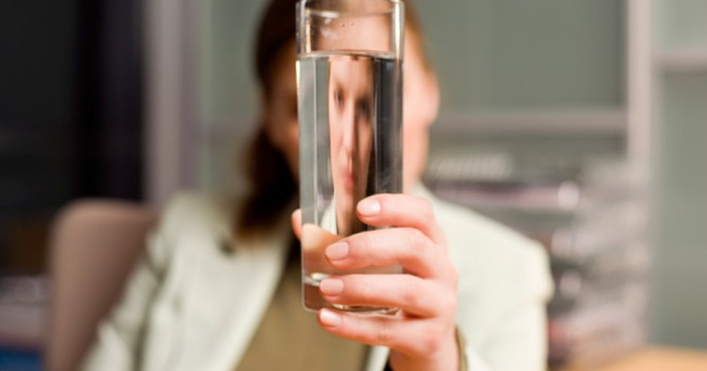

I’m going to say something that might upset people. The eight‑glasses‑a‑day rule is complete nonsense. It’s not based on science. It’s not individualized. It doesn’t account for body weight, climate, activity, or anything else that actually matters. And yet, it’s been repeated so many times that most people believe it’s a law of nature. Where did this myth come from? In 1945, the Food and Nutrition Board of the National Research Council published a recommendation that said adults need about 2.5 liters of water per day. That’s about 84 ounces, or 10.5 cups. But here’s the part everyone forgets. The same report said that most of this water comes from food. Fruits, vegetables, soup, even bread. The actual amount of plain water you need is much less. Somewhere along the way, the “2.5 liters total” became “8 glasses of water.” A glass was defined as 8 ounces. 8 times 8 is 64 ounces, which is about 1.9 liters. That’s even less than the original recommendation. So the myth is not only wrong, it’s also inconsistent. The number changed from 2.5 liters total to 1.9 liters of plain water. That’s a huge difference. Then people started adding to it. Drink 8 glasses of water plus other beverages. Drink 8 glasses even if you’re not thirsty. Drink 8 glasses or you’ll get sick. It became a moral imperative. I’ve had clients who felt guilty for not hitting 8 glasses, even though they felt fine and their urine was pale. I’ve had other clients who forced themselves to drink 8 glasses, felt bloated and miserable, and assumed something was wrong with them. Nothing was wrong with them. The rule was wrong. Let me break down why the 8‑glass rule fails for almost everyone. First, it ignores body weight. A 50‑kilogram (110‑pound) woman needs less fluid than a 100‑kilogram (220‑pound) man. The standard recommendation is 30‑35 milliliters per kilogram of body weight. For the 50‑kg woman, that’s 1.5 to 1.75 liters per day. For the 100‑kg man, it’s 3 to 3.5 liters. One number can’t fit both. But the 8‑glass rule says both should drink 1.9 liters. That’s too much for the woman and too little for the man. Second, it ignores climate. Someone in Miami or Phoenix sweats more than someone in Seattle or London. Tropical climates need a 1.3 multiplier. Desert climates need 1.2. Cold climates need 0.9. The 8‑glass rule doesn’t adjust. So a person in Seattle forcing 8 glasses might be overdrinking. A person in Miami drinking only 8 glasses might be underdrinking. Third, it ignores activity. A construction worker or a marathon runner needs much more fluid than an office worker. The 8‑glass rule treats them the same. That’s absurd. Fourth, it ignores food. About 20‑30% of your fluid needs come from food. Fruits and vegetables are mostly water. Soup is water. Even bread and meat contain water. The 8‑glass rule assumes you get zero fluid from food, so you need to drink all of it. That’s not how human physiology works. Fifth, it creates anxiety. People who don’t hit 8 glasses feel like failures. People who force 8 glasses feel sick. I’ve had clients complain of bloating, nausea, and constant urination from trying to follow the rule. When they stopped forcing it, they felt better. Thirst is a reliable guide for most people. Not all — athletes and elderly people need more attention — but for the average person, drinking when you’re thirsty works fine. The 8‑glass myth also contributes to hyponatremia in some cases. Endurance athletes who force water beyond thirst can dilute their blood sodium to dangerous levels. I’ve seen this in marathons. People think “more water is better” and end up in the medical tent with seizures. The 8‑glass rule didn’t cause that directly, but it reinforces the idea that water is always good and you can’t have too much. You can. So what should you do instead? Use an individualized goal. Calculate your baseline by body weight. 30‑35 mL per kg. Multiply by your climate factor. Add activity adjustments. Then subtract the fluid you get from food — about 20‑30% of the total. That’s your plain water target. For a 70‑kg (154‑pound) person in a temperate climate with light activity: 70 × 30 = 2,100 mL baseline. Subtract 25% for food water = 1,575 mL. That’s about 6.5 cups. Not 8. That person would be overdrinking if they forced 8 glasses. For a 70‑kg person in Miami with moderate exercise: 70 × 30 = 2,100 baseline. Tropical multiplier 1.3 = 2,730. Add activity 500 mL = 3,230. Subtract 25% for food = 2,422 mL. That’s about 10 cups. The 8‑glass rule would leave them dehydrated. See how the same person needs different amounts depending on climate and activity? That’s why a one‑size‑fits‑all rule is useless. I had a client named Linda who was drinking exactly 8 glasses of water a day. She read it in a magazine and had been doing it for 20 years. She felt fine, but she also had high blood pressure and was overweight. She drank 8 glasses of plain water plus coffee and tea. Her total fluid was about 2.5 liters. That’s fine. The problem wasn’t the volume. The problem was that she believed 8 glasses was the only correct number. When she traveled to a hot climate, she still drank 8 glasses. She got dehydrated. She didn’t adjust. I showed her how to calculate her individualized goal. On a normal day in her home climate, her target was actually 7 glasses. She was overdrinking slightly. On a hot day, her target was 10 glasses. She was underdrinking. She felt validated and also a little annoyed that she had been following a myth for two decades. Another client, a runner named Tom, was forcing 8 glasses plus sports drinks. His total fluid was over 4 liters per day. He said he felt “sloshy” and had to pee every 20 minutes. We cut him back to 3 liters total and his GI distress disappeared. He was overhydrating. The 8‑glass rule told him to drink more, but he needed to drink less. The myth persists because it’s simple. Eight is an easy number to remember. And people like rules. They like being told what to do. But hydration is not simple. It’s individualized. It changes day to day. Your needs today are different from yesterday if you exercised more or the temperature changed. I’m not saying the 8‑glass rule is dangerous for most people. It’s not. For a sedentary person in a temperate climate, 8 glasses is close enough. The problem is that people treat it as the only truth. They don’t adjust. They don’t listen to their bodies. They don’t check their urine color. They just count glasses and assume they’re good. The better approach is to use urine color as your guide. Pale straw means you’re well hydrated. Dark yellow means drink more. Amber means you’re behind. Clear means you might be overdoing it. That’s feedback. It’s individualized. It adapts to your needs. The second better approach is to use a calculator that considers your weight, climate, and activity.Daily Water Intake Calculator
Enter your weight, climate, and activity. Get your individualized goal — not 8 glasses.
All data stays in your browser — we never see it.
Hydration Goal Setter
Start with a reasonable goal, adjust based on urine color, and build a habit that fits your life.
All data stays in your browser — we never see it.
Beverage Hydration Index Tool
Not all fluids hydrate the same. But plain water is still the baseline.
All data stays in your browser — we never see it.